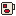
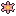

Vídeos › TikTok
brutos
projetos
exports
testes
ukiyo@ukiyo ~/ukiyo $ ls backups CLAUDE.md config docs scripts themes ukiyo@ukiyo ~/ukiyo $ scripts/teste-codificadores.sh h264_vaapi OK h264,High 300/300 rtime=1.07s hevc_vaapi OK hevc,Main 300/300 rtime=0.95s av1_vaapi FALHA Function not implemented # comentário: texto secundário legível ukiyo@ukiyo ~/ukiyo $

